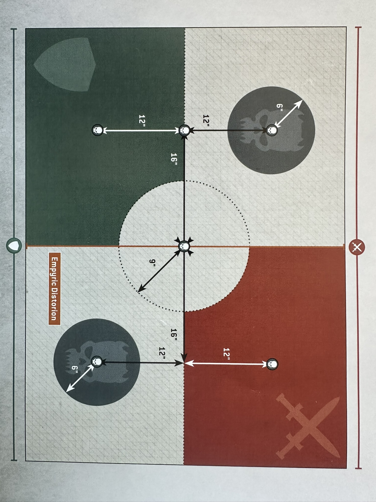
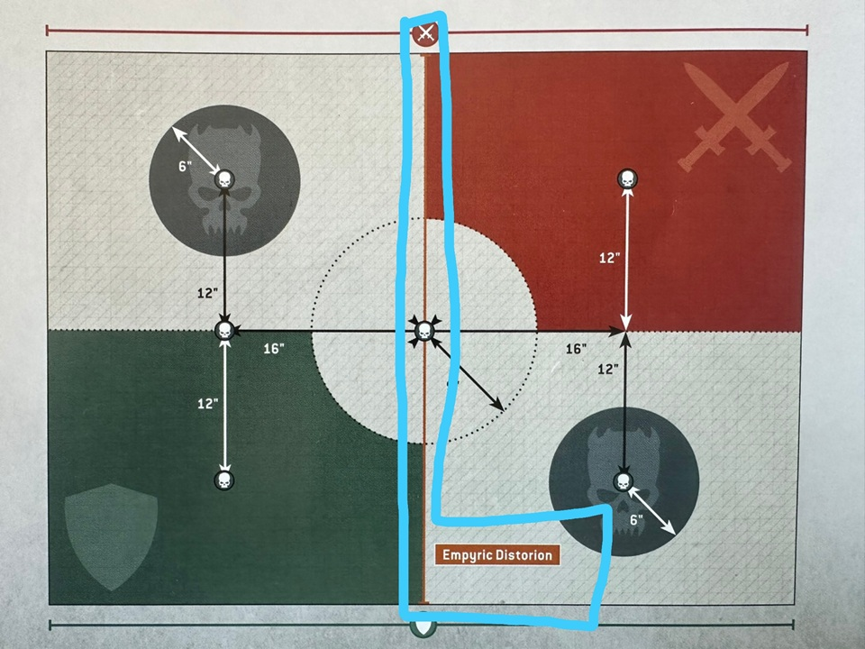
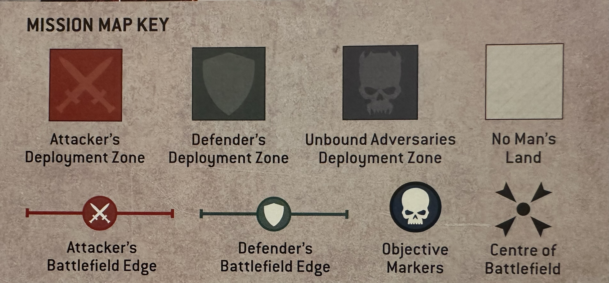

This map has a special effect when an 11 is rolled for a the Warp Event (Warp Surge). There is a line that goes from the middle of each long edge of the map through the center, called Emperic Distortion. It obstructs all line of sight through it. See the second map image.
MISSION OBJECTIVES (DIVIDE AND CONQUER & TO THE BOLD, VICTORY)
Divide and Conquer - Progressive Objective
From the second battle round onwards, at the end of each player's Command phase, the player whose turn it is scores VP as follows:
If they control one or more objective markers, they score 5VP.
If they control one or more objective markers on both sides of the Empyric Distortion, they score 10VP.
In the fifth battle round, the player who has the second turn scores VP as described above, but does so at the end of the turn instead of at the end of their Command phase. Each player can score a maximum of 65VP from this mission objective.
To The Bold, Victory - Progressive Objective
At the end of each player's turn, the player whose turn it is scores 5VP if they control one or more objective markers not within their deployment zone that they did not control at the start of the turn.
Victor Bonus
At the end of the battle, each unit from the victor's Crusade army that is within range of one or more objective markers they control gains 1XP.
Hellscape: Fractured Realm
Rift: The rift extends in all directions from each objective marker, as detailed on the table below.
Battle Round
Range of Rift
1
3"
2
6"
3+
9"
Ephemeral: While a model is wholly within the rift, each time that model makes an attack, it must target a unit within the rift, or that is within Engagement Range of that model's unit. While a model is not wholly within the rift, each time that model makes an attack, it cannot target a unit that is wholly within the rift, unless its unit is within Engagement Range of that unit.
Warp Event: Local, Catastrophic
Start of each player's turn 1 anomaly, 3D6 each time
[3] Daemonic Assault:
For each unit on the battlefield that has one or more Warp counters, that unit suffers D6 mortal wounds for each Warp Counter it has.
[4] Momentary Madness:
Starting with the Attacker, each player selects one unit from their opponent's Crusade army that has one or more Warp counters and inflicts D6 mortal wounds to that unit.
[5] Sudden Absence:
In the final battle round, this result has no effect. Starting with the Attacker, each player selects one unit from their opponent's Crusade army that is on the battlefield that has one or more Warp counters and that is not within Engagement Range of one or more enemy units. That unit is placed into Strategic Reserves
[6] Fatal Distraction:
Starting with the Attacker, each player selects one unit from their opponent’s Crusade army on the battlefield that has one or more Warp counters. Until the next time Anomalies would be generated, subtract 1 from the Objective Control characteristics of models in those units.
[7] Fell Enervation:
Until the next time Anomalies would be generated, for each unit with one or more Warp counters, subtract 1 from the Toughness characteristics of models in that unit.
[8] Lost in Confusion:
Starting with the Attacker, each player selects one unit from their Crusade army on the battlefield that has one or more Warp counters: Until the next time Anomalies would be generated, that unit is not eligible to Shoot.
[9] Dazzling Flares:
Until the next time Anomalies would be generated, for each unit with one or more Warp counters, each time a model in that unit makes a melee attack, subtract 1 from the Hit roll.
[10] Empyric:
From this Hellscape:
Give one Warp counter to each unit that is wholly within the rift.
[11] Warp Surge:
From this mission:
Until the next time Anomalies would be generated, the line on the battlefield marked as Empyric Distortion is active (This line runs through the center of the map from the middle of both long edges, second map image).
While it is active, models cannot see over or through it; models can move through this line normally and ranges are measured through the line normally, but a model that is wholly on one side of this line cannot draw line of sight to anything wholly on the other side of the line.
[12] Step through Space:
From this mission:
Starting with the Attacker, each player selects one unit from their Crusade army that is on the battlefield and has one or more Warp counters. It can make a Normal move of up to D6”.
[13] Unnatural Speed:
From this mission:
Until the next time Anomalies would be generated, for each unit with one or more Warp counters, add 1” to the Move characteristics of models in that unit for each Warp counter that unit has.
[14] Penetrating Sight:
From this mission:
Until the next time Anomalies would be generated, for each unit with one or more Warp counters, ranged weapons equipped by models in that unit have the [IGNORES COVER] ability.
[15] Borrowed Power:
From this mission:
Starting with the Attacker, each player selects one unit from their Crusade army that has one or more Warp counters. Until the next time Anomalies would be generated, weapons equipped by models in those units have the [LETHAL HITS] ability.
[16] Shifting Forms:
From this mission:
Until the next time Anomalies would be generated, for each unit with one or more Warp counters, each time that unit makes a Normal, Advance or Fall Back move, models in that unit can move through models and terrain features. When they do so, those models can move within Engagement range of enemy models, but cannot end that move within Engagement Range of them.
[17] Frenzied Attacks:
From this mission:
Until the next time Anomalies would be generated, for each unit with one or more Warp counters, each time a model in that unit makes an attack, you can re-roll the Hit roll.
[18] Reality Blinks:
From this mission:
For each unit on the battlefield that has one or more Warp counters, roll one D6 for each warp counter the unit has. The result is the number of wounds that unit regains, one at a time as follows:
If that unit contains one or more models with fewer than their starting number of wounds remaining, select one of those models; that model regains one lost wound.
If all models in that unit have their Starting Strength, one destroyed model is returned to that unit with one wound remaining
If all models in that unit have their starting number of wounds, and that unit is at its Starting Strength, it does not regain any more wounds.
Tactical Agendas
At the start of the command phase Roll D3 for the table, roll D6 for the tactical agenda. At the end of your turn you can abandon the agenda and roll for a new one in your command phase. Once per battle you can spend 1 CP to reroll your agenda.
[1-1] STORM SITE
At the end of your turn, select one unit from your Crusade army that is within range of an objective marker that you control that was controlled by your opponent at the start of the turn. Your unit gains 2XP.
[1-2] RECOVER ASSET
RECOVER ASSET (ACTION)
STARTS: Your Shooting phase.
UNITS: One unit from your Crusade army within range of an objective marker that is not within your deployment zone.
COMPLETES: Start of your next turn, or the end of the battle, if you control that objective marker.
IF COMPLETED: The unit that performed the Action gains 1XP and 1CP.
[1-3] STALWART DEFENCE
At the end of your opponent’s turn, if there are no enemy units within your deployment zone, you can select one unit from your Crusade army that is wholly within your deployment zone. Your unit gains 1XP.
[1-4] TROPHY HUNTER
At the end of the turn, select one unit from your Crusade army that destroyed one or more MONSTER, VEHICLE or UNBOUND ADVERSARIES units during that turn. Your unit gains 2XP.
[1-5] STRATEGIC DOMINANCE
At the end of the turn, if you control more objective markers in No Man's Land than your opponent, select up to two units from your Crusade army that are each within range of one or more objective markers in No Man's Land that you control. Each of those units gains 1XP.
[1-6] I SUPPLY LINES
SECURE OR SABOTAGE (ACTION)
STARTS: Your Shooting phase.
UNITS: One unit from your Crusade army that is either wholly within your deployment zone, or wholly within your opponent's deployment zone.
COMPLETES: End of your turn.
IF COMPLETED: The unit that performed the Action gains 1XP if it is wholly within your deployment zone, or 2XP if it is wholly within your opponent's deployment zone.
[2-1] LINEBREAKER
At the end of your turn, select one unit from your Crusade army (excluding AIRCRAFT and Battle-shocked units) that is wholly within your opponent's deployment zone. That unit gains 1XP. If that unit is also wholly within 6" of your opponent’ s battlefield edge, that unit gains 2XP instead.
[2-2] OUTFLANKING ENGAGEMENT
At the end of your turn, select two units from your Crusade army (excluding Battle-shocked units). Each unit must be wholly within 6" of a different battlefield edge (excluding your or your opponent's battlefield edge). Each of the selected units gains 1XP.
[2-3] RAISE THE STANDARD
RAISE STANDARD (ACTION)
STARTS: Your Shooting phase.
UNITS: Select up to 3 units from your Crusade army within range of an objective marker. Each unit must be within range of a different objective marker.
COMPLETES: End of your turn, if you control that objective marker.
IF COMPLETED: Each unit that performed the Action gains 1XP.
[2-4] DUEL OF HONOUR
At the end of the turn, select one unit from your Crusade army that destroyed one or more CHARACTER units during that turn. Your unit scores 1XP (your unit scores 2XP instead if one or more of those destroyed CHARACTER units was destroyed by a melee attack).
[2-5] MARKED FOR EXTERMINATION
When this Tactical Agenda is generated, your opponent must select two units from their Crusade army that are on the battlefield (if there are less than two units in their Crusade army on the battlefield, they select one unit instead, and if there are none, then this Tactical agenda is abandoned and you generate a new one).
At the end of the turn, if one or more of the selected enemy units have been destroyed, select one unit from your Crusade army that destroyed one or more of those enemy units this turn; that unit gains 2XP.
[2-6] CENTER GROUND
At the end of your turn, select one unit from your Crusade army (excluding AIRCRAFT and Battle-shocked units) that is wholly within 3" of the centre of the battlefield. That unit gains 1XP (that unit gains 2XP instead if there are no enemy units within 6" of the centre of the battlefield).
[3-1] EXTEND CONTROL
At the end of your turn, select one unit from your Crusade army that is within range of an objective marker that you control that is within your deployment zone, and select one unit from your Crusade army that is within range of an objective marker that you control that is within No Man’s Land. Each of those units gains 1XP.
[3-2] DEPLOY EXPLOSIVES
DEPLOY EXPLOSIVES (ACTION)
STARTS: Your Shooting phase.
UNITS: One unit from your Crusade army that is either within 3" of the centre of the battlefield or wholly within your opponent's deployment zone.
COMPLETES: End of your turn.
IF COMPLETED: The unit that performed the Action gains 1XP if it is within 3" of the centre of the battlefield, or 2XP if it is wholly within your opponent's deployment zone.
[3-3] GRIM DEFIANCE
When this Tactical Agenda is generated, your opponent must select two units from your Crusade army that are on the battlefield (if there are less than two units in your Crusade army on the battlefield, select one unit instead, and if there are none, then this Tactical Agenda is abandoned and you generate a new one). At the end of your opponent's turn, each of the selected units that is on the battlefield, is not Battle-shocked and has not made a Fall Back move while this Tactical Agenda has been active, gains 1XP. If you cannot achieve this Tactical Agenda (e.g. the selected units are destroyed, Fell Back and/or became Battle-shocked), it is abandoned.
[3-4] EMPYRIC MASTERS
At the end of the turn, select one unit from your Crusade army that gained one or more Warp counters this turn. That unit gains 1XP.
[3-5] REVEL IN CARNAGE
At the end of the turn, select one unit from your Crusade army that destroyed one or more enemy units. Your unit scores 1XP for each enemy unit it destroyed this turn (to a maximum of 3XP).
[3-6] GUERRILLA FIELDCRAFT
GUERRILLA FIELDCRAFT (ACTION)
STARTS: Your Shooting phase.
UNITS: One unit from your Crusade army that is within a terrain feature and not within your deployment zone.
COMPLETES: End of your opponent's turn or the end of the battle, if your unit is on the battlefield.
IF COMPLETED: That unit gains 2XP.
Agenda Reminders
Assassinate
Each time a model from your Crusade army destroys an enemy CHARACTER unit, that model’s unit gains 2XP. Each time a model from your Crusade army destroys an enemy WARLORD, EPIC HERO or UNBOUND ADVERSARIES CHARACTER unit, that model's unit gains an additional 2XP.
At the end of the battle, if the enemy WARLORD is destroyed, you gain 1 strategic point.
Lines of Defence
At the end of the battle, you can select either two or three units from your Crusade army (excluding AIRCRAFT and Battle-shocked units). One of these units must be wholly within your deployment zone, one must be wholly within your opponent's deployment zone, and - if you are selecting three units - the third must be wholly within 12" of the centre of the battlefield. If you cannot select two units, then you cannot achieve this Agenda. Each selected unit gains 2XP.
At the end of the battle, if units from your Crusade army gained XP via this Agenda and you were able to select three units that satisfied the conditions above, you gain 1 strategic point.
Warp Rites
At the start of the battle, no objective markers have Warp rites completed.
WARP RITES (ACTION)
STARTS: Your Shooting phase.
UNITS: One unit from your Crusade army within range of an objective marker that has not had Warp rites completed.
COMPLETES: End of your turn, if you control that objective marker.
IF COMPLETED: That objective marker has had Warp rites completed and the unit that performed the Action gains 1 Warp counter and 2XP.
At the end of the battle, if three or more objective markers on the battlefield have had Warp rites completed by your Crusade army, you gain 1 strategic point. A unit cannot gain more than 6XP per battle from this Agenda.
Cleanse and Purge
Each time a unit from your Crusade army destroys an UNBOUND ADVERSARIES unit and/or an enemy unit that has one or more Warp counters, that unit gains 1XP (if your unit had no Warp counters when it destroyed that enemy unit, it gains 2XP instead). A unit cannot gain more than 2XP per battle from this Agenda. At the end of the battle, if 5 or more units from your Crusade army gained XP from this Agenda, you gain 1 strategic point.
Sacrificial Defiance
At the start of the battle, your opponent selects up to two different objective markers on the battlefield. At the end of the battle, select up to one of those objective markers that you control and up to three units from your Crusade army that are within range of that objective marker. Each of those units gains 2XP.
Other Agenda Reminders
Blessing Reminders
Strategist
You start the battle with 2CP.
For Honour and Glory
Select one additional Armageddon Agenda this battle.
Tempered in the Fires of War
At the end of the battle, each unit from your Crusade Army that is not destroyed gains 2XP.
Sorcerous Might
Each time you select a Psyker unit from your Crusade Army to shoot or fight, if that unit has one or more Warp counters, you can remove one of them. If you do, until the end of the phase, each time a model in that unit makes an attack with a Psychic weapon, add 1 to the Wound Roll.
Front-Line Operative
Battleline and Psyker units in your Crusade Army that perform an Action are still eligible to shoot in that turn (but cannot start to perform another Action in that turn.)
Storm-Speaker
Once per battle, whenever you generate Anomalies, if your Warlord is on the battlefield, you can reroll one or more of the results. If your Warlord is a Psyker, you can do this up to twice per battle.
Daemon Hunters
Each time a model in your Crusade Army makes an attack that targets an Unbound Adversaries unit, you can re-roll the hit roll.
Stygian Darkness
Until the start of the second battle round, each unit from your Crusade Army has the Stealth ability.
To the Victor the Spoils
If you are the Victor in this battle, you gain 1RP. If you are the Victor, and the difference in Crusade Points between your Crusade Army and your opponent’s Crusade Army is 10 or more, you gain 2RP instead.
Ready and Waiting
Until the start of the second battle round, each time a ranged attack is made against one of your units, if that unit is wholly within your deployment zone, it receives Benefit of Cover against that attack. In addition, once per battle, you can target one Battleline unit in your Crusade Army with the Fire Overwatch stratagem for 0CP.
Strategic Gambit
At the end of the battle, roll 1D6. If you were the Victor, add 3 to the result. On a 4+, you gain 1 Strategic Point.
Faith and Duty (Imperium)
At the start of the battle, select one objective marker on the battlefield. While a model from your Crusade Army is within range of that objective marker, unless that unit is Battle-Shocked, add 1 to that model’s Objective Control characteristic.
Slaves to Darkness (Chaos)
Once per battle, at the start of the Unbound Adversaries turn, you can select one Unbound Adversaries unit on the battlefield. Until the end of the turn, that unit treats the units in your Crusade Army as friendly units.
Dread Raiders (Everyone Else)
After both players have deployed their armies, you can select up to two units from your Crusade Army and redeploy them. When doing so, those units can be placed into Strategic Reserves, regardless of how many units are already in Strategic Reserves.
Post mission player guide - after the mission is over, use this guide to copy text into Administratum.
Unbound Adversaries:
After the Deploy Crusade Armies step, set up two Power Level 1 UNBOUND ADVERSARIES units, one wholly within one of the Unbound Adversaries deployment zones, and one wholly within the other.
There is an Unbound Adversaries turn at the start of each battle round which happens after other 'start of the battle round' rules are resolved but before the first player's turn.
An Unbound Adversaries turn consists of a Movement phase, a Shooting phase, a Charge phase and a Fight phase. Where a rule refers to such a phase, to an opponent's Movement phase, Shooting phase, Charge phase or Fight phase, or to an opponent's turn, it also applies to the corresponding Unbound Adversaries phase or turn. For example, the Fire Overwatch Stratagem can be used in your opponent's Movement or Charge phase, and so can also be used in the Unbound Adversaries Movement or Charge phase.
If at any point, while following these rules, there is more than one way to resolve them (for example, if there are two enemy units that are the same distance from an UNBOUND ADVERSARIES unit, or if an UNBOUND ADVERSARIES model could target more than one unit in the Fight phase), the player whose Crusade army has a higher total of Warp counters decides for the rest of the phase. If there is a tie, players roll-off and the winner decides for the rest of the phase.
Movement Phase
In the Unbound Adversaries Movement phase, each UNBOUND ADVERSARIES unit that is not within Engagement Range of one or more enemy units makes a Normal Move as follows:
That UNBOUND ADVERSARIES unit must end that move as close as possible to the closest enemy unit.
Each model in that unit moves as close as possible to that enemy unit.
There is no Reinforcements step in an Unbound Adversaries Movement phase
Shooting Phase
In the Unbound Adversaries Shooting phase, each UNBOUND ADVERSARIES unit that is eligible to shoot does so. When it does, each ranged attack made by a model in that unit must target the closest eligible target.
Charge Phase
In the Unbound Adversaries Charge phase, each UNBOUND ADVERSARIES unit that is within 12" of one or more enemy units and is not within Engagement Range of one or more enemy units declares a charge that targets the closest enemy unit. When resolving an UNBOUND ADVERSARIES unit's charge move:
That UNBOUND ADVERSARIES unit must end that move as close as possible to the closest enemy unit.
Each model in that unit moves as close as possible to that enemy unit.
Fight Phase
In the Unbound Adversaries Fight phase, each UNBOUND ADVERSARIES unit that is eligible to Fight does so.
An UNBOUND ADVERSARIES unit will only make a Consolidation move if it can end that move within Engagement Range of one or more enemy units.
UNBOUND ADVERSARIES units are the only units eligible to fight in the Unbound Adversaries fight phase, and they are not eligible to fight in any other Fight phase.
Setup
Map



Battle Orders
1-3 have been skipped
[4] Determine Attacker Defender
It may be pre assigned per match, if not, roll off and winner decides
[5] Read mission
Some mission objectives are Progressive some are End Game. Progressive objectives are scored during play, end game objectives are scored at the end of the game.
[6] Place Objective Markers
Check the mission map and mission rules
[7] Create battlefield
Setup up terrain according to core rules. Terrain features should not be set up with any impassable sections (such as the walls of a ruin) within 1" of any objective markers.
[8] Purchase Requisitions
[9] Select Agendas
Each player secretly selects two Agendas for the battle and writes them down. One of them can be tactical, tactical Agendas change during battle. Then they are revealed
[10] Select Crusade Blessings
Compare Crusade points, a difference of 5 or more, the Army with lower total Crusade points is the underdog and gets Crusade Blessing.See Crusade Blessings for claiming Universal or Faction blessings
[11] Declare Battle Formations
In the order stated below, both players now secretly note down:
Which of their Leader units will start the battle attached (they must specify which Leader unit is attached to which Bodyguard unit for proper XP assignment).
Which of their units will start the battle embarked within TRANSPORT models (they must specify which units are embarked on which models).
Which of their units will start in Reserves (including Strategic Reserves).
When both players have done so, they declare their selections to their opponent.
In Armageddon missions, Reserves units cannot arrive during the first battle round, and any Strategic Reserves or Reserves unit that has not arrived on the battlefield by the end of the third battle round counts as having been destroyed, as do any units embarked within them (this does not apply to units that are placed into Strategic Reserves after the first battle round has started).
[12] Deploy Crusade Armies
Players now alternate setting up their remaining units one at a time, starting with the Defender. Each time a player sets up a TITANIC unit when it is their turn to set up a unit, they skip their next turn to set up a unit. A player's units must be set up wholly within their deployment zone - the Attacker's and the Defender's deployment zones are shown on the deployment map of each mission. If one player finishes deploying all their units, their opponent then deploys the remainder of their units.
UNBOUND ADVERSARIES
If your mission is using the rules for Unbound Adversaries, the mission rules may specify that these are set up on the battlefield now.
[13] Redeploy Units
Some rules allow players to redeploy certain units after both armies are deployed. Unless otherwise stated, such rules are resolved in this step. Players alternate resolving any such rules, starting with the Attacker.
[14] Determine First Turn
Unless the mission briefing says otherwise, players roll off and the winner takes the first turn.
[15] Resolve Pre-Battle Rules
Players alternate resolving any pre-battle rules units from their Crusade army may have, starting with the player who will take the first turn.
[16] Set Warp Events
Unless the mission rules state the scale and intensity of the Warp Events, the players now determine these as described on page 98.
[17] Begin The Battle
The first battle round begins. Players continue to resolve battle rounds until the battle ends.
[18] End The Battle
The battle ends after five battle rounds have been completed. If one player has no models remaining in their Crusade army at the start of their turn, the other player may continue to play out their turns until the battle ends.
[19] Determine The Victor
At the end of the battle, the player with the most Victory points is the winner. If players are tied, the battle is a draw. If every model in a player's Crusade army is painted to a Battle Ready standard, that player is awarded a bonus 10 Victory points.
The victor of a mission can then claim the Victor bonus listed on that mission. If the game is a draw, neither player can claim the victor bonus. If you are playing an Armageddon Campaign, you should inform the Campaign Master of the result of the battle so that your alliance can be awarded the appropriate strategic points, as described on page 73.
[20] Update Crusade Cards
The players must now update their Crusade cards for all the units they used in the battle by taking Out of Action tests for any that were destroyed, and selecting a unit to be Marked for Greatness (selected unit gains 3XP). If this results in any units gaining a rank, before the next battle, they can gain Battle Honours as described on page 60.
[21] Update Order Of Battle
Increase your Battle tally and Requisition points by 1, and make any notes that you wish to record following your battle. If you wish to add any units to your Crusade force or spend any Requisition points, do so and update your Order of Battle accordingly before your next battle,
Fixed Agendas - Selection
You can select your fixed agendas here. Your selected agendas will show up at the top of the page under the tactical agendas.
These are the fixed agenda's. Generally you will pick two. One of them can be tactical, in which case you would use the tactical agenda selector above. There is also a crusade blessing
that lets you pick a third. The text box is for the bonus agenda you get from your codex's crusade rules campaign.
- Each time a model from your Crusade army destroys an enemy CHARACTER unit, that model’s unit gains 2XP. Each time a model from your Crusade army destroys an enemy WARLORD, EPIC HERO or UNBOUND ADVERSARIES CHARACTER unit, that model's unit gains an additional 2XP.
At the end of the battle, if the enemy WARLORD is destroyed, you gain 1 strategic point.
- At the end of the battle, you can select either two or three units from your Crusade army (excluding AIRCRAFT and Battle-shocked units). One of these units must be wholly within your deployment zone, one must be wholly within your opponent's deployment zone, and - if you are selecting three units - the third must be wholly within 12" of the centre of the battlefield. If you cannot select two units, then you cannot achieve this Agenda. Each selected unit gains 2XP.
At the end of the battle, if units from your Crusade army gained XP via this Agenda and you were able to select three units that satisfied the conditions above, you gain 1 strategic point.
- At the start of the battle, no objective markers have Warp rites completed.
WARP RITES (ACTION)
STARTS: Your Shooting phase.
UNITS: One unit from your Crusade army within range of an objective marker that has not had Warp rites completed.
COMPLETES: End of your turn, if you control that objective marker.
IF COMPLETED: That objective marker has had Warp rites completed and the unit that performed the Action gains 1 Warp counter and 2XP.
At the end of the battle, if three or more objective markers on the battlefield have had Warp rites completed by your Crusade army, you gain 1 strategic point. A unit cannot gain more than 6XP per battle from this Agenda.
- Each time a unit from your Crusade army destroys an UNBOUND ADVERSARIES unit and/or an enemy unit that has one or more Warp counters, that unit gains 1XP (if your unit had no Warp counters when it destroyed that enemy unit, it gains 2XP instead). A unit cannot gain more than 2XP per battle from this Agenda. At the end of the battle, if 5 or more units from your Crusade army gained XP from this Agenda, you gain 1 strategic point.
- At the start of the battle, your opponent selects up to two different objective markers on the battlefield. At the end of the battle, select up to one of those objective markers that you control and up to three units from your Crusade army that are within range of that objective marker. Each of those units gains 2XP.
Codex and/or Other Agendas
Input Army Codex's Agendas instead of Armegeddon Agendas as part of your two agendas and/or input extra agendas due to a Codex's special Crusade rules or Crusade blessings (clear both text and text area fields to hide)
Crusade Blessings - Selection
Crusade Blessings selected here will show up under Crusade Blessing Reminders at the top of the page.
The Crusade Points totals of the two mustered forces are compared. The side with less Crusade Points is the Underdog, and can select a number of Crusade Blessings to turn the tide. The Underdog cannot select the same blessing more than once.
Difference in Crusade Points
Number of Blessing Choosable
0-4
0
5-9
1
10-19
2
20+
4
- You start the battle with 2CP.
- Select one additional Armageddon Agenda this battle.
- At the end of the battle, each unit from your Crusade Army that is not destroyed gains 2XP.
- Each time you select a Psyker unit from your Crusade Army to shoot or fight, if that unit has one or more Warp counters, you can remove one of them. If you do, until the end of the phase, each time a model in that unit makes an attack with a Psychic weapon, add 1 to the Wound Roll.
- Battleline and Psyker units in your Crusade Army that perform an Action are still eligible to shoot in that turn (but cannot start to perform another Action in that turn.)
- Once per battle, whenever you generate Anomalies, if your Warlord is on the battlefield, you can reroll one or more of the results. If your Warlord is a Psyker, you can do this up to twice per battle.
- Each time a model in your Crusade Army makes an attack that targets an Unbound Adversaries unit, you can re-roll the hit roll.
- Until the start of the second battle round, each unit from your Crusade Army has the Stealth ability.
- If you are the Victor in this battle, you gain 1RP. If you are the Victor, and the difference in Crusade Points between your Crusade Army and your opponent’s Crusade Army is 10 or more, you gain 2RP instead.
- Until the start of the second battle round, each time a ranged attack is made against one of your units, if that unit is wholly within your deployment zone, it receives Benefit of Cover against that attack. In addition, once per battle, you can target one Battleline unit in your Crusade Army with the Fire Overwatch stratagem for 0CP.
- At the end of the battle, roll 1D6. If you were the Victor, add 3 to the result. On a 4+, you gain 1 Strategic Point.
Faction Specific Crusade Blessings
- All Crusade Army models must have the Imperium keyword
At the start of the battle, select one objective marker on the battlefield. While a model from your Crusade Army is within range of that objective marker, unless that unit is Battle-Shocked, add 1 to that model’s Objective Control characteristic.
- All Crusade Army models must have the Chaos keyword
Once per battle, at the start of the Unbound Adversaries turn, you can select one Unbound Adversaries unit on the battlefield. Until the end of the turn, that unit treats the units in your Crusade Army as friendly units.
- All Crusade Army models must NOT have the Imperium or Chaos keyword
After both players have deployed their armies, you can select up to two units from your Crusade Army and redeploy them. When doing so, those units can be placed into Strategic Reserves, regardless of how many units are already in Strategic Reserves.